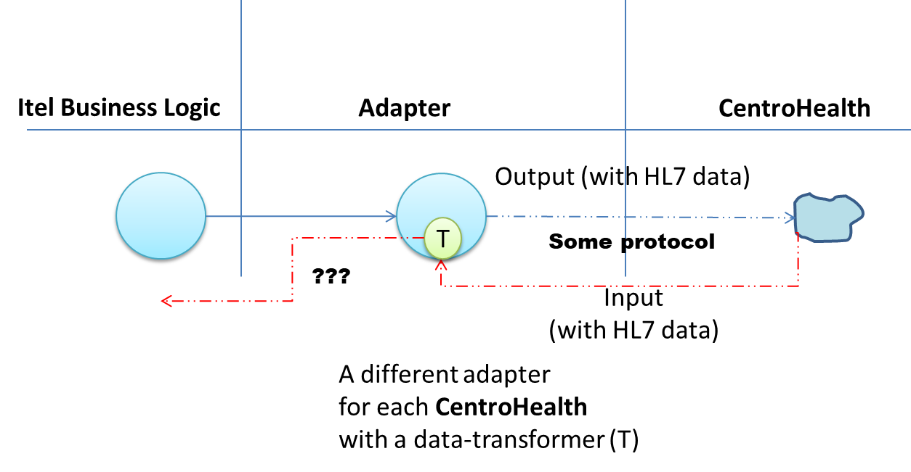
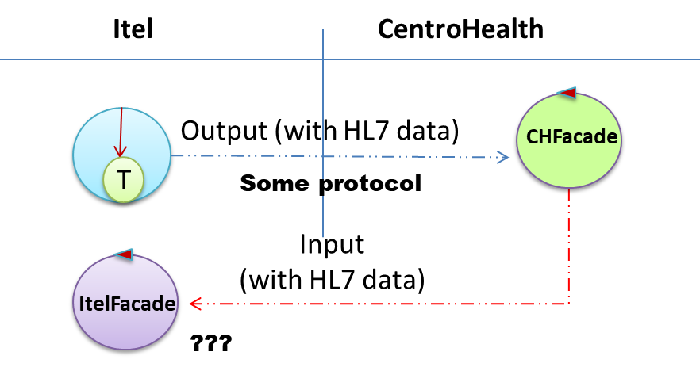

Introduction
- Confluence space: Nextagora
- Confluence space: UNIBO
- Projects on bitbucket
- HDA_Disi.html (overviewrepo)
- DISI - HapiUsage (on .it.unibo.hapi2.2/userDocs/)
- DISI - HealthReferences.html (on natMaterial/health/userDocs/)
- DISI - MirthExperiments (on .health/userDocs/)
Overview
Sm@rtEven ha due tipi di UML-actors:Operatore
Un agente specializzato (ad es. un medico) che accede mediante un browser ad una (unica?) piattaforma ITel installata presso un centro (ad es. ospedale).Paziente
Un agente non specializzato (una persona) che accede ai servizi erogati da una piattaforma ITel mediante computer e/o smartphone.
Area Geografica TimeZone EHR EHR/M Nestagora Sm@rtSuite Sm@rtEven Core-Itel Sm@rtEven CentroBase Area Geografica Core Itel Sm@rtSuite ProdottoDiContesto
In futuro unCentroBase ProdottoDiContesto CentroBase remoto ??? ) che fornisce servizi specializzati in un certo dominio applicativo (ad es. interazioni conCentroHealth CentroHealth Paziente DISCUSSIONE 29/07/2020 : al momento si puo' ipotizzare che:- Un
CentroBase CentroHealth - Un
CentroHealth - Il partner fornisce accessi agli
EHR EHR/M - Itel concorda con il partner le modalità di interazione con il
CentroHealth - Di solito accede a un server via HTTPS/TCP; il server (denominato qui
CHFacade - I dati da scambiare con la
CHFacade Sm@rtEven CHFacade CentroHealth
- Di solito accede a un server via HTTPS/TCP; il server (denominato qui
- Un
Paziente sottoinsieme??? di) FHIR Patient, che vive in una determinataArea Geografica CentroHealth CentroBase Operatore sotto??? ) insieme diPaziente CentroBase Enrollment CentroBase DISCUSSIONE 29/07/2020 : UnEnrollment CHFacade CHFacade CentroBase - Il
CentroBase - Il
CentroBase CHFacade CHFacade CentroBase - ...
Enrollment Operatore CentroBase HealthDevice ValoreMisurato HealthDevice Piano terapeutico sottoinsieme ??? di) FHIR careplan relativo a un precisoPaziente
User stories: Sm@rtEven
Si veda:
|
Altri moduli (out if DISI scope)
|
User stories: operatore
Come- poter introdurre/eliminare
Enrollment - poter inviare/ricevere dati a/da uno o più
CentroHealth - ricevere notifiche su modifiche del
Piano terapeutico Paziente CentroHealth - inviare notifiche su modifiche del
Piano terapeutico Paziente - monitorare un
ValoreMisurato Paziente
User stories: paziente
Come- ricevere supporto alla realizzazione di un
Piano terapeutico - ricevere notifiche su modifche del
Piano terapeutico - avere supporto per ottenere (via Bluetooth)
un
ValoreMisurato CentroBase - effettuare un
teleconsulto
Requirements: ProdottoDiContesto
La modularizzazione di Nestagora ha portato alla opportunità di incapsulare entro il L'assunzione è che le informazioni scambiate da ITel con un
- scambio di dati HL7 Version 2
- scambio di informazioni espresse in FHIR
Qui sotto (si veda ITel-scope) sono evidenziati in giallo i concetti centrali e sottolineati in verde concetti secondari ma comunque di interesse ITel.

Per i dettagli sui Domini di riferimento si veda:
FHIR - Itel Scope
Requirement analysis
- Le richieste provenienti da Itel verso
Health Data Adapter dovrebbero contenere indicazioni sulCentroHealth CentroHealth DISCUSSIONE 29/07/2020 : Si esclude questo caso, in quanto un paziente che afferisceCentroBase CentroHealth - ...
Problem analysis
Come premessa e' opportuno consultare la discussione sui Modelli di interazione presentata in: Health - Interazione.Prime osservazioni pssono essere:
- Sostituire un oggetto con un
attore non implica ancora l'insorgere di grosse problematiche relative ai sistemi distribuiti. Tutto può avveire ancora su base locale con interazioni scambio di messaggi traoggetti attivi , ciascuno dotato di unainput queue . In questo modo si evitano a priori problemi legati all'suo di di memoria comune. - Attualmente il DISI utilizza attori basati su
Kotlin che implicano meno librerie e sembrano anche più performanti rispetto ad attori Akka. Si noti che Kotlin sta diventando il linguaggio di riferimento per applicazini su Android. - Si ricorda che si possono attivare migliaia di attori poichè gli attori sono gestiti con schemi 'a coroutine'.
Logical architecture
Si ricorda la legenda:
Oggetti + REST calls

Problemi FONDAMENTALI DA DISCUTERE
- Cosa intendiamo esattamente per interazione REST?
- Quando e perche' si introduce una interazione REST tra elementi (anche all'interno di
Core-Itel - Interazione REST sono considerate necessarie nella interazione tra
Core-Itel CentroHealth - Quando, perche' e come viene introdotto il concetto di
Risorsa implicato dalla interazione REST? - Una chiamata REST sincrona (call con attesa di risposta) pone grossi problemi, ben noti. In cosa consiste una chiamata
REST asincrona ? - In che modo e'
organizzato un server REST quando deve gestire una chiamata asincrona? - In che modo un server REST
notifica informazioni ai client(browser)?:
- Usa websockets ( wikipedia)
- Usa HTML Server-Sent Events(SSE) API. Si veda anche Server-sent events ( wikipedia)
- Usa un broker MQTT ( wikipedia)
- Usa WebSub ( wikipedia)
- ...
Riportiamo qui di seguito alcuni appunti su concetti ben noti sui quali e' pero' opportuno concordare al fine di impostare al meglio una architettura logica di progetto.
Dai dati ai Domini modellati da RISORSE
L'adozione di REST come paradigma di interazione implica che un servizio RESTful sia organizzato intorno a un dominio espresso da un insieme di Risorse, ciascuna raggiungibile con un opportuno URI.La definizione del paradigma e' data dalla tesi di Roy Fielding nel 2000, Architectural Styles and the Design of Network-based Software Architectures, discussa presso l’Universita' della California, ad Irvine.
I REST non sono necessariamente legati al Web, ma dal momento che il Web ha tutto quello che serve per essere considerata una piattaforma di elaborazione distribuita secondo i principi REST, non sono necessarie altre sovrastrutture per realizzare quello che è il Web programmabile. Il che è una dichiarazione di aperto antagonismo ai Web Service basati su SOAP.
Principi REST
- Identificazione delle risorse
- Utilizzo esplicito dei metodi HTTP
- Risorse autodescrittive
- Collegamenti tra risorse
- Comunicazione senza stato
Risorse
PerUna risorsa deve essere identificata univocamente attraverso un URI. Ad esempio:
http://www.itel.com/pazienti/1234 http://www.itel.com/pianoterapuetico?codfiscpaziente=...Nel progettare un Web Service in modalità REST e' utile evitare l’uso di verbi negli URI ma limitarsi ad utilizzare nomi, ricordandosi che un URI identifica una risorsa.
REST stabilisce una mappatura uno a uno tra le tipiche operazioni CRUD (creazione, lettura, aggiornamento, eliminazione di una risorsa) e i metodi HTTP.
Metodo HTTP Operazione CRUD Descrizione POST Create Crea una nuova risorsa GET Read Ottiene una risorsa esistente PUT Update Aggiorna una risorsa o ne modifica lo stato DELETE Delete Elimina una risorsaIl corpo di una richiesta HTTP con metodi PUT e POST e' pensato per il trasferimento della rappresentazione di una risorsa e non per eseguire chiamate remote o altre attività simili.
Rappresentazione delle Risorse
Le risorse sono concettualmente separate dalle rappresentazioni restituite al client.I principi REST non pongono nessun vincolo sulle modalita' di rappresentazione di una risorsa.
Di fatto, però, è opportuno utilizzare formati il più possibile standard in modo da semplificare l’interazione con i client. Inoltre, sarebbe opportuno prevedere rappresentazioni multiple di una risorsa, per soddisfare client di tipo diverso.
La possibilità di rappresentazioni multiple produce alcuni benefici pratici: ad esempio, se abbiamo un output sia HTML, sia XML/Json, possiamo consumare il servizio sia con un’applicazione sia con un comune browser. In altre parole, seguendo i principi REST nel progettare un’applicazione Web è possibile costruire sia una Web API che una Web UI.
Il tipo di rappresentazione inviata dal Web Service al client è indicato nella stessa risposta HTTP tramite un tipo
Collegamenti tra risorse
Un altro vincolo dei principi REST consiste nella necessita' che le risorse siano tra loro messe in relazione tramite link ipertestuali. Questo principio e' anche noto comeIn sostanza, tutto quello che un client deve sapere su una risorsa e sulle risorse ad essa correlate deve essere contenuto nella sua rappresentazione o deve essere accessibile tramite collegamenti ipertestuali.
Comunicazione stateless
La comunicazione stateless, non vuol dire che un’applicazione non deve avere stato. La responsabilità della gestione dello stato dell’applicazione non deve essere conferita al server, ma rientra nei compiti del client.Con una comunicazione senza stato è possibile creare cluster di server che possono rispondere ai client senza vincoli sulla sessione corrente, ottimizzando le prestazioni globali dell’applicazione.
Attori + REST calls (cambio di paradigma)
L'adozione di interazioni REST significa avere sostituito oggetti con servizi e procedure-call con operazioni (asincrone) di message-passing. Siamo alle soglie di una cambio di paradigma nella costruzione del software che costituisce il passo iniziale verso il mondo dei microservizi.
Test plans
PROGETTO
Riferimenti al 24/07
Per impostare un prima architettura di progetto, crediamo sia opportuno chiarire bene prima di tutto il senso della transizione da Nestagora a Smartsuite e poi delienare un quadro di riferimento legato alle interazioni in Sm@rteven.Sm@rteven su Nestagora
| Versione iniziale errata
 |
Versione dopo DISCUSSIONE 29/07  |
Sm@rtEven su Sm@rtSuite
Versione iniziale proposta
 |
Versione dopo DISCUSSIONE 29/07 |
Interazioni nel mondo HL7
Lo standard di comunicazione HL7 prevede due possibili tipi di interazione, indipendemente dal modello del contenuto informativo scambiato nel messaggio (modellato sempre secondo HL7). In particolare:comunicazione UNSOLICITED
definisce un’interfaccia che consente di inviare un messaggio HL7 (dispatch) senza che questo sia stato richiesto su un canale TCP/IP ad hoc. la comunicazione e' monodirezionale, dalla sorgente del messaggio al sistema interessato a ricevere aggiornamenti/informazionicomunicazione SOLICITED
definisce un’interfaccia che prevede un’interazione in modalita' request-response il sistema richiedente invia un messaggio HL7QRY e il ricevente risponde con un messaggio codificato in HL7. Alcuni esempi: ADT, ORM, ORU, CD
L’invio dell’
comunicazione BIDIREZIONALE
se e solo se tra due sistemi possono essere inviati messaggi unsolicited da entrambe le parti e/o se entrambe le parti possono richiedere messaggi solicited (viaQRY )comunicazione MONODIREZIONALE
In tutti gli altri casi